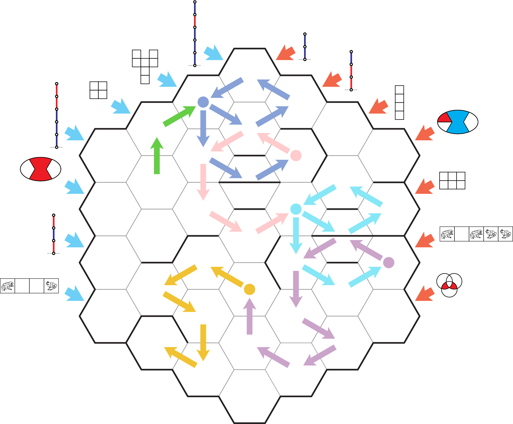

The games and theories described in this puzzle are not unique to the puzzle. They are taken from combinatorial game theory, specifically from the seminal and enjoyable Winning Ways for Your Mathematical Plays, hinted in the flavortext. Most of the game positions that the puzzle uses can be found directly in that book, which can be found online in PDF form. It is not necessary to find the book itself, or even the specific values of the game positions. If you have the values it can make comparisons easier, but the comparisons can always be done using the $G_1+ (-G_2)$ method described in the puzzle.
The following chart shows the values of each game in the puzzle, and where in the book their diagrams and values can be found. Games used as coordinates are listed clockwise from the lower left. In the case of Toad-and-Frog puzzles, the images have been taken directly from the book as well.
| Game in puzzle | Game type | Description | Value | Can be found in Winning Ways on page |
|---|---|---|---|---|
| coordinate 1 | Toads and Frogs | T _ _ F | $0$ | 13 |
| coordinate 2 | Hackenbush | RBR | $-\frac{3}{4}$ | 17 |
| coordinate 3 | Col | _ R _ | $2$ | made for puzzle |
| coordinate 4 | Hackenbush | BBBRR | $\frac{9}{4}$ | 23 |
| coordinate 5 | Domineering | 2x2 | $\{1|-1\}$ aka $\pm 1$ | 121 |
| coordinate 6 | Domineering | Y-shape | $2*$ | 140 |
| coordinate 7 | Hackenbush | BBBRB | $\frac{11}{4}$ | 23 |
| coordinate 8 | Hackenbush | BB | $2$ | 17 |
| coordinate 9 | Hackenbush | RRB | $-\frac{3}{2}$ | 17 |
| coordinate 10 | Domineering | 4x1 | $2$ | 120 |
| coordinate 11 | Col | _ R B _ | $-1$ | 39 |
| coordinate 12 | Domineering | 2x3 | $\{2|-\frac{1}{2}\}$ aka $\frac{3}{4} \pm \frac{5}{4}$ | 121 |
| coordinate 13 | Toads and Frogs | T _ T F F | $\uparrow$ | 64 (in symbolic form) |
| coordinate 14 | Col | Venn (red) | $3$ | made for puzzle |
| shelf 1 | Hackenbush | RBB | $-\frac{1}{4}$ | 17 |
| shelf 2 | Col | R _ _ | $\frac{1}{2}$ | 37-8 |
| shelf 3 | Hackenbush | B RRR | $\frac{1}{8}$ | 17 |
| shelf 4 | Toads and Frogs | T T _ F F | $*$ | 63-4 |
| shelf 5 | Domineering | U pentomino | $0$ | 120 |
| shelf 6 | Col | Venn (blue) | $-3$ | made for puzzle |
| shelf 7 | Domineering | 6-omino | $\uparrow$ | 139 |
| shelf 8 | Hackenbush | BBRR | $\frac{5}{4}$ | 23 |
| shelf 9 | Domineering | 4x2 | $+_2$ | 125 |
| shelf 10 | Toads and Frogs | T _ T F T F F | $\Uparrow *$ | 70-71 |
The route through the maze starts at the base of the arrow, moves in the direction indicated, and then the first comparison is in cell (5,8). The table below gives the result of each comparison along the route. That comparison gives the result R (since $2 > \pm 1$), and so the path turns right, and moves to (6,8). The comparison there gives a "fuzzy" (not comparable) result, and the maze rules say that we don't move when we get this result. So our next comparison is still in cell (6,8), but since we have done a comparison with those coordinate games before, we take the first game from the shelf and add it to the left side for the new comparison. And so on through this table and the grid. The rightmost column also marks when we turn 120°, because of a wall in the 60° direction.
| Left Coord | Right Coord | Compare Special? | Left Game | Right Game | Left Value | Add to Left | Right value | Game Added | Verdict / Turn |
|---|---|---|---|---|---|---|---|---|---|
| 5 | 8 | Dom (2x2) | Hac (BB) | $\{1|-1\}$ aka $\pm 1$ | $2$ | R | |||
| 6 | 8 | Dom (Y-shape) | Hac (BB) | $2*$ | $2$ | NC | |||
| 6 | 8 | Repeat! Add to left from shelf | Dom (Y-shape) | Hac (BB) | $2*$ | $-\frac{1}{4}$ | $2$ | Hac (RBB) | R |
| 6 | 9 | Dom (Y-shape) | Hac (RRB) | $2*$ | $-\frac{3}{2}$ | L | |||
| 7 | 9 | Hac (BBBRB) | Hac (RRB) | $\frac{11}{4}$ | $-\frac{3}{2}$ | L (120) | |||
| 7 | 8 | Hac (BBBRB) | Hac (BB) | $\frac{11}{4}$ | $2$ | L | |||
| 6 | 8 | Repeat! Add to left from shelf | Dom (Y-shape) | Hac (BB) | $2*$ | $\frac{1}{2}$ | $2$ | Col (R _ _) | L |
| 5 | 9 | Dom (2x2) | Hac (RRB) | $\{1|-1\}$ aka $\pm 1$ | $-\frac{3}{2}$ | L | |||
| 5 | 10 | One exit. No compare. | |||||||
| 6 | 10 | Dom (Y-shape) | Dom (4x1) | $2*$ | $2$ | NC | |||
| 6 | 10 | Repeat! Add to left from shelf | Dom (Y-shape) | Dom (4x1) | $2*$ | $\frac{1}{8}$ | $2$ | Hac (B RRR) | L (120) |
| 6 | 9 | Repeat! Add to left from shelf | Dom (Y-shape) | Hac (RRB) | $2*$ | $*$ | $-\frac{3}{2}$ | Toa (T T _ F F) | L |
| 5 | 9 | Repeat! Add to left from shelf | Dom (2x2) | Hac (RRB) | $\{1|-1\}$ aka $\pm 1$ | $0$ | $-\frac{3}{2}$ | Dom (U pentomino) | L |
| 4 | 10 | Hac (BBBRR) | Dom (4x1) | $\frac{9}{4}$ | $2$ | L | |||
| 4 | 11 | Hac (BBBRR) | Col (_ R B _) | $\frac{9}{4}$ | $-1$ | L | |||
| 5 | 11 | Dom (2x2) | Col (_ R B _) | $\{1|-1\}$ aka $\pm 1$ | $-1$ | NC | |||
| 5 | 11 | Repeat! Add to left from shelf | Dom (2x2) | Col (_ R B _) | $\{1|-1\}$ aka $\pm 1$ | $-3$ | $-1$ | Col (Venn (blue)) | R |
| 5 | 12 | One exit. No compare. | |||||||
| 6 | 12 | One exit. No compare. | |||||||
| 6 | 11 | Dom (Y-shape) | Col (_ R B _) | $2*$ | $-1$ | L | |||
| 5 | 11 | Repeat! Add to left from shelf | Dom (2x2) | Col (_ R B _) | $\{1|-1\}$ aka $\pm 1$ | $\uparrow$ | $-1$ | Dom (6-omino) | L |
| 4 | 12 | Hac (BBBRR) | Dom (2x3) | $\frac{9}{4}$ | $\{2|-\frac{1}{2}\}$ aka $\frac{3}{4} \pm \frac{5}{4}$ | L | |||
| 4 | 13 | Hac (BBBRR) | Toa (T _ T F F) | $\frac{9}{4}$ | $\uparrow$ | L | |||
| 5 | 13 | Dom (2x2) | Toa (T _ T F F) | $\{1|-1\}$ aka $\pm 1$ | $\uparrow$ | NC | |||
| 5 | 13 | Repeat! Add to left from shelf | Dom (2x2) | Toa (T _ T F F) | $\{1|-1\}$ aka $\pm 1$ | $\frac{5}{4}$ | $\uparrow$ | Hac (BBRR) | L (120) |
| 5 | 12 | One exit. No compare. | |||||||
| 4 | 12 | Repeat! Add to left from shelf | Hac (BBBRR) | Dom (2x3) | $\frac{9}{4}$ | $+_2$ | $\{2|-\frac{1}{2}\}$ aka $\frac{3}{4} \pm \frac{5}{4}$ | L | |
| 3 | 13 | Col (_ R _) | Toa (T _ T F F) | $2$ | $\uparrow$ | L | |||
| 3 | 14 | Col (_ R _) | Col (Venn (red)) | $2$ | $3$ | R (120) | |||
| 2 | 14 | Hac (RBR) | Col (Venn (red)) | $-\frac{3}{4}$ | $3$ | R | |||
| 2 | 13 | Hac (RBR) | Toa (T _ T F F) | $-\frac{3}{4}$ | $\uparrow$ | R | |||
| 3 | 12 | Col (_ R _) | Dom (2x3) | $2$ | $\{2|-\frac{1}{2}\}$ aka $\frac{3}{4} \pm \frac{5}{4}$ | NC | |||
| 3 | 12 | Repeat! Add to left from shelf | Col (_ R _) | Dom (2x3) | $2$ | $\Uparrow *$ | $\{2|-\frac{1}{2}\}$ aka $\frac{3}{4} \pm \frac{5}{4}$ | Toa (T _ T F T F F) | L |
| 3 | 11 | Col (_ R _) | Col (_ R B _) | $2$ | $-1$ | L | |||
| 2 | 11 | Hac (RBR) | Col (_ R B _) | $-\frac{3}{4}$ | $-1$ | L (120) | |||
| 2 | 12 | Hac (RBR) | Dom (2x3) | $-\frac{3}{4}$ | $\{2|-\frac{1}{2}\}$ aka $\frac{3}{4} \pm \frac{5}{4}$ | R | |||
| 1 | 13 | Toa (T _ _ F) | Toa (T _ T F F) | $0$ | $\uparrow$ | R (120) | |||
| 1 | 12 | Toa (T _ _ F) | Dom (2x3) | $0$ | $\{2|-\frac{1}{2}\}$ aka $\frac{3}{4} \pm \frac{5}{4}$ | NC |
Here is the path through the grid, with a color change every time we pause at a "not comparable" result. What colors you change to does not matter. The maze ends at the dead end in the lower left, and ends with a "not comparable" result but no more games on the shelf.
Each time we pause at a "fuzzy" (not comparable) result, we "change to a different pen color". (We also take from the shelf a game that has a box around it, to set these off from the others as a confirmation.) The shapes we trace with each different pen form lowercase letters, which spell out the answer "RECESS" (clued by the introductory "It's playtime").